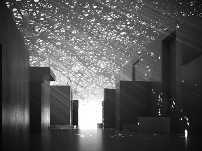

Biography

Summary
Jean Nouvel’s projects transform the landscapes in which they are built, often becoming major urban events in their own right. His unique approach, driven by the specificities of context, program, and site has proven effective in numerous successes around the world.
Family and Education
One such success, a building that first brought Nouvel international recognition is the Institut du Monde Arabe (IMA) in Paris where one of its facades is made entirely of mechanical oculi operated by photoelectric cells that automatically open and close in response to light levels. The French critic, Alain de Gourcuff, said of it, “The overall effect is at once highly decorative in a Middle Eastern way and projects state-of-the-art electronics.”
Practice
Commissioned in 1981 as one of the first Grand Projects initiated by President Francois Mitterand, IMA was completed in 1987 and consists of a museum, a library, temporary exhibit spaces, children’s workshops, a documentation center, an auditorium and a rooftop restaurant. A+U described the building as “a modern western building that pays tribute to Arabic culture.”